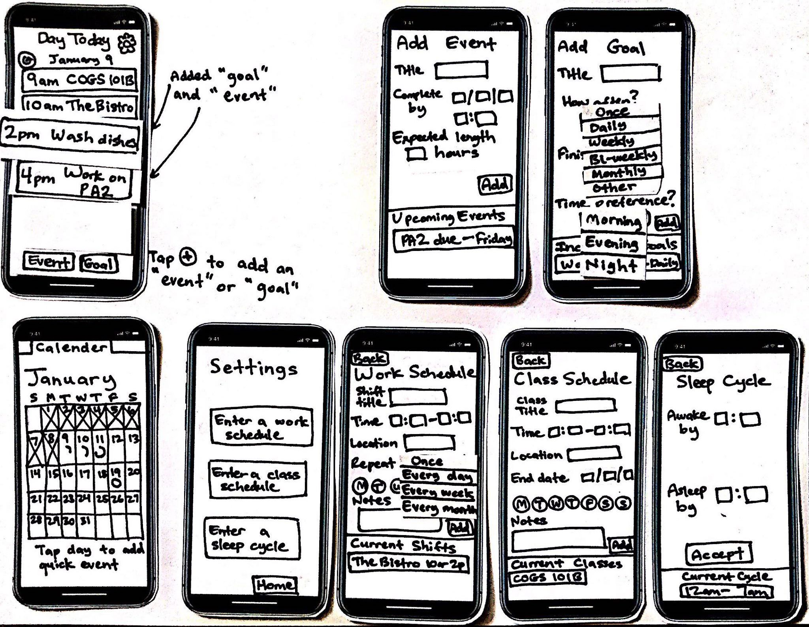

Evan Barosay
Ryan Chambers
Christal Vo
10 Weeks
January 2018 ~ March 2018
Bootstrap
HTML
CSS
Heroku
JavaScript
Rapid Prototyping
Rapid Prototyping
Comparitive Evaluations
About
Our team was tasked to design a technolgoy that brought
users joy, rather than frustration, in the
field of 'accessibility'. DayToday is an app geared for children with
learning disabilties. After user research at a local elementary school,
we learned that many of these children have difficulty completing day to day
tasks and often get distracted or overwhelmed. Our app is designed to help users
focus on individual tasks, one at a time.
My Role
UX Researcher, UI Designer, Programmer
Due to our small team, all members took responsibility and tasks along every step of the process.
I specifically conducted user-interviews with people with learning disabilties and
teachers, created paper prototypes and low-fidelity Sketch designs, and used
HTML and CSS for basic formatting, as well as JavaScript to implement features such as
the individual scrolling through tasks on the home page.
Needfinding
To better define our root problem and point of view, our team used user-research methods to gain a clearer perspective on the path of our project. Research included competitive analysis, observational resesarch, interviews, storyboards, and personas. We interviewed from potential user groups, including teachers that worked with children with learning disabilties as well as adults with focusing problems. We asked about how a young child navigates their everyday life and what unique struggles they run into. The answers to the interview questions allowed us to gain insights about and empathize with who I was designing. From here, we created storyboards of potential users and how they could use our app idea and established our point of view: Managing one’s time in a schedule is unorganized and easily forgettable. Time is easier to manage when everything is laid out in a clear, memorable, and referable way. Planning a productive and efficient schedule to keep one on task throughout their week should be an automated and seamless process. .
Prototyping and User Testing
To flesh out our ideas, we created experience prototypes for user testing.
Because our target users are a
younger audience, we tried to test with kids and users who interact with
children commonly. At first, we created
paper prototypes and iterated upon the paper prototypes to understand the best
flow of our app. We also used Wizard-of-Oz prototyping in user testing with peers
to test our flow, navigation, and current design. We also used
heuristic evaluations and in-person interviews to consolidate
our general characteristics and feedback of
the UI. We moved on to a digital prototype by deploying our
interface to Heroku. We implemented our suggested improvements
to address major usability problems.
One of the major motivations for this app was to condense
the information the user is receiving so they don't feel
overwhelmed. We wanted to display one task at a time, however from
feedback, we found out users still want access to their entire list
of tasks. As a result, we A/B tested the home screen with a single displayed task
versus one task displayed with the abilitiy to scroll right and
left through the entire list. Version B (scrolling function)
was far more popular and became a permanent feature in the prototype.

Paper Prototyping
A/B Testing
Finale
After analyzing our results, we deployed our final version of our mobile-web app: DayToday.
We also did a presentation on
DayToday to UCSD teaching assistants and
professors, as well as local professionals in the field. DayToday is an
app that helps users tackles daily tasks one at a time. Its main feature
is displaying only one task and its visual on the screen. The visual reminder
helps to make tasks more tangible and engaging for our target users, who are children.
To view all tasks, users use the arrows to scroll through. Additionally,
the app keeps track of how many tasks the user has accomplished to give
a sense of accomplishment.
Click to explore the prototype